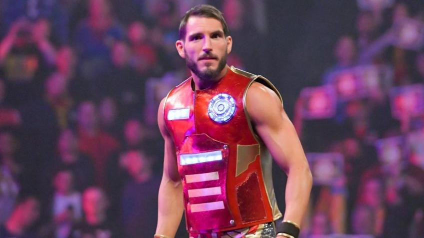

NXT is where Johnny became Johnny Wrestling
Not just a wrestler people liked. Not just a solid hand. A true NXT icon — the guy fans believed in because his whole story was built on grit, heart, and refusing to stay down.
He came back to NXT in a slump. He looked drained, doubted, and disconnected from himself. And still, somehow, the moment found him. Johnny Gargano has another shot at the NXT North American Championship — and this fan page exists for one reason: to say loudly and without apology that the heart of NXT still beats with Johnny Wrestling.

Johnny Gargano returning to NXT for this opportunity hits differently because NXT is not just another stop in his career. It is the place where his legend was built. The comeback energy here is what makes the whole thing electric: he was struggling, Candice LeRae brought him back to the brand that made him, and now he is one win away from wearing that championship again.
Not just a wrestler people liked. Not just a solid hand. A true NXT icon — the guy fans believed in because his whole story was built on grit, heart, and refusing to stay down.
This is not polished, corporate comeback energy. It is messier than that. It feels human. He came in hurting, disconnected, and not fully himself — which makes the possibility of a rise feel even bigger.
There is heart in this story. Candice LeRae bringing him back and pushing him toward the finish gave the whole thing emotion, loyalty, and a sense that belief can carry someone until they catch up to themselves again.
This is a championship that fits him. Fast-paced. Hard-earned. Built for a guy whose biggest weapon has always been resolve. A North American Title run from Gargano would feel right instantly.
The road to this championship opportunity was not clean, pretty, or heroic in the traditional sense. It was chaos. Entrants rolled in. Alliances interfered. Bodies piled up. Shiloh Hill looked ready to run the table. And through all of it, Johnny Gargano — barely moving for long stretches — ended up with the winning pin and the title shot.
Robert Stone puts together a Gauntlet Eliminator to crown a number one contender for Myles Borne’s NXT North American Championship.
Jackson Drake, Shiloh Hill, Charlie Dempsey, and Dion Lennox cycle into the match — and then Candice LeRae appears to introduce Johnny Gargano.
Instead of storming in with swagger, Gargano feels emotionally checked out. That is what made the moment stand out: the fire was not obvious yet.
O.T.M. attacks Dion Lennox at ringside. Interference reshapes the match. The energy turns frantic and unstable, exactly the kind of environment where anything can happen.
Hill starts stacking eliminations and feels like the clear story of the match. For a moment, it looks like the whole thing belongs to him.
Hill gets yanked outside and slammed into the steel steps. Dempsey adds more punishment. The whole bout starts to feel like a battlefield rather than a standard contender’s match.
LeRae keeps trying to bring him back to life. Then, at exactly the right instant, she physically pushes him into position — and belief becomes action.
Johnny lands on Hill, gets the pin, and suddenly the man who looked lost is on his way to Stand & Deliver with a championship opportunity in his hands.
The argument is not based on nostalgia alone. Johnny Gargano has the resume, the history, the ring IQ, and the emotional ceiling for this kind of moment. He has already held the title. He knows what pressure in NXT feels like. And when the stage is biggest, his best self tends to show up.
Johnny Gargano’s entire career reads like one long argument against quitting. Too small. Too overlooked. Too easy to dismiss. And still he became one of the defining figures in modern NXT history. That legacy is why this title opportunity feels like a chapter in a much bigger story — not a random booking beat.
The self-described chubby kid from Cleveland kept chasing the dream even when the easy response would have been to stop believing.
Fans gave him the nickname because he earned it the hard way: heart-first performances, comeback energy, and unforgettable big-match emotion.
His partnership and rivalry with Tommaso Ciampa helped shape a whole era of NXT and gave wrestling fans some of the most memorable storytelling in the brand’s history.
Johnny was not just an underdog. He also showed charisma, loyalty, humor, and leadership in one of NXT’s most entertaining group dynamics.
NXT Champion. North American Champion. Tag Team Champion. The resume already says legend. Another title would only deepen it.
That may be the deepest reason this page exists. Johnny Gargano never really stops fighting, and the fans who love him never really stop believing.
One of the best things about this moment is that it was not presented as a lone-wolf miracle. Candice LeRae saw the slump, brought Johnny back to NXT, and helped physically jolt him into the win. That makes the whole story feel more human. Sometimes fighters do not come back because they suddenly feel powerful. Sometimes they come back because somebody believes in them long enough to get them back on their feet.
The clock is ticking toward April 4, 2026. Every second pulls Johnny Gargano closer to another shot at the NXT North American Championship. This is the waiting room before the eruption.
Five quick questions. One fan identity. One result worth sending into the group chat.
This is built for the specific kind of fan who knows Johnny Gargano is not just about moves. It is about heart, comeback energy, legacy, nerves, and the exact kind of belief that survives when things start looking bleak.
Take the quiz, get your fan type, then send it to the other Gargano fan in your life.
Click the button and push the hype higher.
Rotate through fan chants until you find the one that belongs in the arena.
Because title matches turn on signature moments.
Because he never feels fake. Because he has always looked like someone fighting for something real. Because when Johnny Gargano rises, it feels earned. And because deep down, wrestling fans will always love somebody who gets knocked down, looks finished, and still finds a path back to the light.